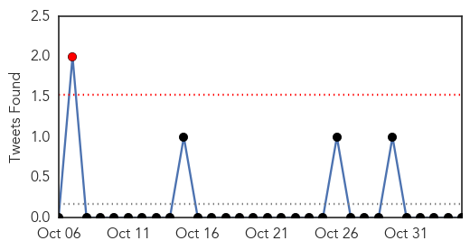
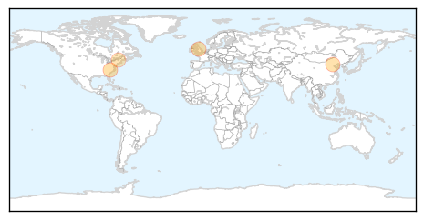
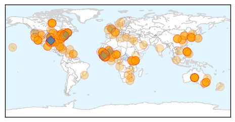

Influenza
30-Day Web Trend
0 alerts, 0 warnings

30-Day Twitter Trend
1 alerts, 0 warnings

Article Locations
Article Confidences

Top Articles:
Top Tweets:
-
No tweets found for Nov 04, 2014
Ebola
30-Day Web Trend
16 alerts, 8 warnings

30-Day Twitter Trend
2 alerts, 17 warnings

Article Locations
Article Confidences

Top Articles:
- 1.000
- Disease claims another doctor
- 1.000
- WHO boss blames drug industry's profit drive for Ebola cure delay
- 1.000
- Questions Remain About Ebola
- 1.000
- Ebola: Fears amid Hope (1), Articles
- 1.000
- Latest Ebola News: China to quarantine Ebola doctors coming from West Africa
- 1.000
- Ebola in India: 8 Facts about Ebola you must know
- 1.000
- Thousands in Sierra Leone break Ebola quarantine to find food
- 1.000
- Ebola claims fifth Sierra Leone doctor - Africa
- 1.000
- Ebola in Africa: This is how much of the continent is really affected
- 1.000
- Latest Updates Thousands Break Ebola Quarantine to Find Food in Sierra Leone
- 1.000
- Ebola kills 5th doctor in Sierra Leone News -- GOPUSA
- 1.000
- Ebola’s orphans: Survivors care for children left behind by disease
- 1.000
- What You Should Know About Ebola
- 1.000
- Two local patients found Ebola-free after isolation
- 1.000
- Ebola in Dallas: Stories, videos, photos, graphics and resources from The Dallas Morning News
- 1.000
- Untitled Article
- 1.000
- S'pore imposes visa requirements on citizens from 3 Ebola-affected countries (Amended), Government & Economy
- 1.000
- Panel Debates Lessons from Ebola
- 1.000
- Ebola cure delayed by drug industry’s drive for profit, WHO leader says
- 1.000
- US nurse, Maine settle Ebola quarantine suit
- 1.000
- Visitors to Vietnam from Ebola-hit areas to be twice checked
- 1.000
- US Scientists: Questions Remain About Ebola
- 1.000
- Ebola false alarms in London, Vietnam
- 1.000
- News Guide: A look at latest Ebola developments
- 1.000
- Can You Really get Ebola From Your Dog? (Op-Ed)
- 1.000
- Sudan Vision Daily
- 1.000
- Rise in number of Ebola orphans
- 1.000
- Worst Ebola outbreak on record tests global response
- 1.000
- China.org.cn China, Breaking News, News
- 1.000
- As Ebola declines in Liberia, health officials scale back response plans
- 1.000
- CHRONOLOGY-Worst Ebola outbreak on record tests global response
- 0.999
- Ebola, from Trenton to Canada, Atlanta to Sierra Leone
- 0.999
- Despite errors, Ebola fails to spread here
- 0.999
- Ebola Impedes Access to General Health Care
- 0.999
- Govts going about Ebola control the wrong way
- 0.999
- Ebola: Abbott government relents, will send Australian volunteers to treat victims
- 0.999
- UNICEF to boost staff in Ebola-hit countries; UN health chief deplores lagging vaccine research
- 0.999
- Protecting your workforce: what you need to know about Ebola
- 0.999
- Nurse, Maine settle Ebola quarantine suit
- 0.999
- New Ebola Outbreak Raises Fears In Sierra Leone
- 0.999
- Researcher lectures on history, consequences, treatment of Ebola
- 0.999
- WHO asks Canada to justify Ebola-related travel restrictions
- 0.999
- Abbott government relents, will send Australian volunteers to treat victims
- 0.999
- Ebola Trend Uneven as UN Worries ‘Like Mad’ About Rebound
- 0.999
- Australia to contract private medical firm to fight Ebola
- 0.999
- UNICEF to boost staff in Ebola-hit countries; UN health chief deplores lagging vaccine research
- 0.999
- Thousands break Ebola quarantine to find food
- 0.999
- WHO Pillories Drug Industry on Failure to Develop Vaccine
- 0.999
- Thousands break Ebola quarantine to find food
- 0.999
- Michael Gerson: Still in denial on Ebola
Showing top 50 articles...
Top Tweets:
- 0.874
- There is no Ebola vaccine 'because the virus previously only affected poor African nations' WHO chief says http://t.co/vVksCShIXL
- 0.827
- Fifth Sierra Leone doctor dies from Ebola; apparent case drop in Liberia; today's Ebola news summary http://t.co/AGpHBvXuHN
- 0.815
- RT: Sierra Leone - Thousands break Ebola quarantine to find food http://t.co/xJyJcSt4Ir h/t casey Ebola
- 0.799
- RT: Efforts to tackle Ebola in Senegal - now Ebola free - incl not only rapid infectious disease control but also SMS http://t.co/VL…
- 0.799
- RT: Efforts to tackle Ebola in Senegal - now Ebola free - incl not only rapid infectious disease control but also SMS http://t.co/VL…
- 0.739
- In Ebola affected region of West Africa persistent malaria epidemic is adding to more deaths https://t.co/dmtbZbc42C globalhealth
- 0.713
- Proud of work of CDC experts working 24/7 in response to Ebola outbreak in West Africa. Read their stories here: http://t.co/8oQQvtOvH1
- 0.690
- On the frontline in Sierra Leone as Ebola virus spreads. http://t.co/wFRN7zBKix
- 0.690
- On the frontline in Sierra Leone as Ebola virus spreads EbolaResponse @BBCWorld http://t.co/Ig3x2vyJQ9
- 0.679
- Fresh Ebola outbreak in Sierra Leone raises fears of new infection chain. http://t.co/C7BYave2PO
- 0.679
- Fresh Ebola outbreak in Sierra Leone raises fears of new infection chain http://t.co/0JHqtnfDYe
- 0.667
- Public Health in the Age of Ebola in West Africa ebolaresponse http://t.co/St5jNBam98
- 0.640
- RT: Ebola - Invisible Enemy. Multilingual song promotes positive action to prevent ebola https://t.co/h9LMZpTpCp
- 0.638
- New Ebola outbreak in Sierra Leone raises fears of new infection chain. http://t.co/34lT71FY7z
- 0.627
- Peter Salama Global Ebola Emergency Coordinator on’s response to Ebola ebolaresponse http://t.co/YS1m6azHPu
- 0.625
- Even after surviving Ebola some face 'Post Ebola Syndrome' w/numerous health problems reports: http://t.co/CUPSuKPopB
- 0.621
- RT: Response to and. Why Liberia's response to Ebola is not a failure of aid or governance http…
- 0.612
- BBC News - On the frontline in Sierra Leone as Ebola virus spreads http://t.co/ByqI3a8WQI
- 0.599
- hey UW Public Health I see that you are tweeting Ebola check out http://t.co/U0M8jd1ElC for up to the minute Ebola info.
- 0.599
- hey Public Health - SKC I see that you are tweeting Ebola check out http://t.co/U0M8jd1ElC for up to the minute Ebola info.
- 0.597
- As Ebola declines in Liberia health officials reassess response plans. http://t.co/gDSJM6ezLi
- 0.575
- Identify Isolate Inform: Ambulatory Care Evaluation of Patients with Possible Ebola Virus Disease http://t.co/5M4gV0eYC2
- 0.573
- hey Medical Health News I see that you are tweeting Ebola check out http://t.co/U0M8jd1ElC for up to the minute Ebola info.
- 0.516
- .@ReneeNal It treats returning healthcare workers like a threat. Hundreds have worked Ebola outbreaks for years without infection. 1/n
- 0.514
- hey SN Health District I see that you are tweeting Ebola check out http://t.co/U0M8jd1ElC for up to the minute Ebola info.
- 0.510
- So Much for Ebola: U.S. Loses Interest in Virus as Cases Dwindle. http://t.co/V3vkBwL7zc